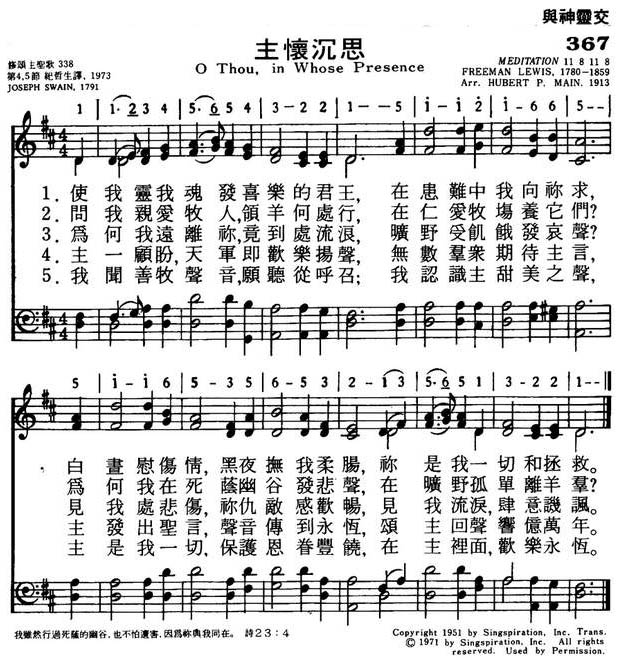
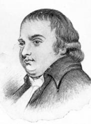

|
|
|
|
1 O thou, in whose presence my soul takes delight, 2 Oh, why should I wander an alien from thee |
367主怀沉思
1.是我灵我魂发喜乐的君王，
在患难中我向你求， 白昼慰伤情黑夜抚我柔肠， 你是我一切和拯救。 2.问我亲爱牧人领羊何处行， 在仁爱牧场养他们， 为何我再死荫幽谷发悲伤， 在旷野孤单离羊群。 3.为何我远离你竟到处流浪， 旷野受饥饿发哀声， 见我处悲伤你仇敌感欢畅， 见我流泪肆意讥讽。 4.主一顾盼天军即欢乐扬声， 无数群众期待主言， 主发出圣言声音传到永�琚A 颂主回声响亿万年。 5.我闻善牧声音愿听从呼召， 我认识主甜美之声， 主是我一切保护恩眷丰饶， 在主里面欢乐永�琚C |
|
https://www.mred365.cn/szxg/7370.html
 https://hymnary.org/hymn/FHOP/page/93
|
|
|
|
|


與主同在我靈歡唱O THOU, IN WHOSE PRESENCE, MY SOUL TAKES DELIGHT (演奏曲一) https://www.youtube.com/watch?v=6IvxZSR8P6I -
Fernando Ortega - O Thou, In Whose Presence https://www.youtube.com/watch?v=TnwXJjKj6Tg -
O Thou, in whose presence my soul 12th Church Choir Festival Jerusalem Choir Doopil Jeon https://www.youtube.com/watch?v=Gx_xN1gS88c
LX1899
O
Thou, In Whose Presence
367主怀沉思
| Text: | O Thou in Whose Presence |
| Author: | Joseph Swain |
| Tune: | [O thou in whose presence my soul takes delight] |
| Composer: | Freeman Lewis |
| Short Name: | Joseph Swain |
| Full Name: | Swain, Joseph, 1761-1796 |
| Birth Year: | 1761 |
| Death Year: | 1796 |
Swain, Joseph,

was born at Birmingham in
1761, and after being apprenticed to an engraver, removed to London. After a
time he became a decided Christian, and being of an emotional poetic
temperament, began to give expression to his new thoughts and feelings in
hymns. In 1783 he was baptized by the Rev. Dr. Rippon, and in 1791 became
minister of a Baptist congregation in East Street, Walworth. After a short
but popular and very useful ministry, he died April 16, 1796 Swain published
the following:—
(1) A Collection of Poems on Several Occasions,
London, 1781; (2) Redemption, a Poem in five Books,
London, 1789; (3) Experimental Essays on Divine Subjects,
London, 1791; (4) Walworth Hymns, by J. Swain, Pastor of
the Baptist Church Meeting there, London, 1792, 129 hymns; with a Supplement,
1794, 192 hymns; (5) A Pocket Companion and Directory,
London, 1794.
In addition to a limited number of Swain's hymns, annotated under their respective first lines, the following, from his Walworth Hymns1792, and the 2nd ed., 1796, are also in common use:—
| Short Name: | Freeman Lewis |
| Full Name: | Lewis, Freeman, 1780-1859 |
| Birth Year: | 1780 |
| Death Year: | 1859 |
Freeman Lewis USA 1780-1859. Born at Basking Ridge, NJ, he became a surveyor, writer, and traveling school teacher who played the organ and wrote music on the side. His family moved to Fayette, PA, in 1796. In 1809 he married Rebecca A Craft, and they had 11 children: Runyan, David, George, James, John, William, Levi. Alpheus, Thomas, Margaret, and Mary Ann. Three died young (of flux and scarlet fever). He compiled and published a book of camp meeting hymns and other sacred music:”The beauties of harmony” (1813-16-18), which included some of his own compositions. An appendix to it contained explanations of musical terms amd rules and principles of composition. These were sometimes used in singing schools. He also served as county surveyor of Fayette County, PA (1823-36) and helped Jonathan Knight survey and find a route for the Chesapeake & Ohio Canal. He served as organist for the Presbyterian Church in Uniontown, PA. His wife died in 1844, after which he moved to Knox. OH. His works include a 300 page family history, attesting to his being well-educated and having interest in many subjects. He died at Knox, OH.
John Perry
Tune Information
| Title: | DAVIS (Lewis) |
| Composer: | Freeman Lewis |
| Meter: | 11.8.11.8 |
| Incipit: | 11234 56543 22151 |
| Key: | D♭ Major |
| Source: | Wyeth's Repository of Sacred Music, Part Second, 1813 |
| Copyright: | Public Domain |
Notes
Also published as "DULCIMER" (e.g. LDS1985), "BELOVED", and "MEDITATION"
History of Hymns: “O Thou, in Whose Presence”
By C. Michael Hawn
"O Thou, in Whose Presence," by Joseph Swain;
The United Methodist Hymnal, No. 518
O Thou, in whose presence my soul takes delight,
On whom in affliction I call,
My comfort by day and my song in the night,
My hope, my salvation, my all!
Joseph Swain (1761-1796) provides a lesser-known hymn that alludes to passages of Scripture with an exotic, almost mystical quality to this eighteenth-century poem. Swain was a Baptist minister in England. As a child, he was orphaned and apprenticed to an engraver. Prior to his conversion, he published A Collection of Poems on Several Occasions, containing The Poet, Solitude, Beauty, Hendon Grove, Verse on Miss V****n, benevolence, and Gratitude (1781). After he bought a Bible and began to study it seriously, he converted and was baptized in 1783 under the preaching of John Rippon (1751-1836), himself a lover of hymns and an editor of song collections, the most famous and influential being A Selection of Hymns, from the best authors (1787). Swain was called to a Baptist mission in Walworth in 1791.
According to The
United Methodist Hymnal editor Carlton R. Young, “O Thou,
in Whose Presence” is one of several evangelical hymns that came to the U.S.
from England that were matched with a melody from the United States and took
on the feel of a folk hymn. Two others are "Amazing Grace" and "How Firm a
Foundation." (Young, 1993, 532). The hymn appeared in Swain's Experimental
Essays on Divine Subjects, in verse and prose: and hymns for
social worship (1791) in nine eight-line stanzas. Baptist
hymnologist William J. Reynolds notes that the text with the tune DAVIS
appeared in three early nineteenth-century American tune books, the most
well-known being John Wyeth's Repository
of Sacred Music, Part Second (1813) (Reynolds, 1975, 170).
For all nine original stanzas, see https://hymnary.org/text/o_thou_in_whose_presence_my_soul_takes_d.
Originally titled "A Description of Christ by His Graces and Power,"
portions of the hymn’s first stanza allude to parts of the first three
chapters of Song of Solomon. For example, this love song to God and Jesus
Christ draws from the ideas of Song of Solomon 1:7 in stanza one of the
hymn: “Tell me, O thou whom my soul loveth, where thou feedest, where thou
makest thy flock to rest at noon: for why should I be as one that turneth
aside by the flocks of thy companions?” (KJV)
Stanza 2 of the hymn as it appears in The United Methodist Hymnal (actually the second half of the first stanza in the original) draws on themes from Psalm 23:2 and 4:
Where dost Thou, dear Shepherd [at noon-tide], resort with Thy sheep,
To feed them in pastures of love?
Say, why in the valley of death should I weep,
Or alone in this wilderness rove?
The reference to the “dear Shepherd” has been substituted for the original “at noontide” — a change that made the reference to Psalm 23 even clearer.
Stanza 3 — “O why should I wander, and alien from thee” — in The United Methodist Hymnal is actually the first half of stanza 2 in the original hymn.
Stanza 4 — “Restore, my dear Savior, the light of thy face” — in The United Methodist Hymnal is not a part of the original nine stanzas (Reynolds, 1975, 170). This was a popular hymn that appeared in a number of tune books of the day. It was common practice to conflate stanzas and insert others from different sources if the editor so chose.
Stanza 5 – in The United Methodist Hymnal, the first half of stanza 5 in the original, ends in an imaginative description of a heavenly scene:
He looks! and ten thousands of angels rejoice
and myriads wait for his word.
He speaks! And eternity, filled with his voice,
reechoes the praise of the Lord.
Between stanzas 3 and 5 as cited in The United Methodist Hymnal are remarkable stanzas in the original hymn that draw on images from the Song of Solomon and other passages of Scripture. The Scriptural passages cited are representative and illustrate of themes that permeate the hymn, not comprehensive:
This is my
beloved, his form is divine, [Song of Solomon 2:8-10; Matthew
3:17]
His vestments shed odors around;
The locks on his head are as grapes
on the vine, [Psalm 128:3; John 15:1]
When autumn with plenty is crowned.
The roses
of Sharon, the lilies
that grow [Song 2:1-2]
In vales on the banks
of the streams; [Isaiah 66:12]
On his cheeks, in the beauty of excellence blow,
And his eyes are as quivers of beams!
His voice as the sound of a dulcimer sweet,
[Daniel 3:5; 3:10; 3:15]
Is heard through the shadows of death;
The cedars
of Lebanon bow at his feet, [Psalm 29:5; 92:12;
Ezekiel 31:3]
The air
is perfumed with his breath. [Proverbs 27:9]
His lips
as a fountain
of righteousness flow, [Proverbs 10:11]
That waters the garden of
grace; [Song 5:1]
From which their salvation
the Gentiles shall know, [Isaiah 66:12; Acts 28:28]
And bask in the smiles of his face.
The result is a mystical collage of evocative images appealing to the senses, infused with Scripture. Indeed, these two stanzas were prominent in various tune books in the nineteenth century, including Southern Harmony (1835) and Christian Harmony (1867), both edited by William [“Singing Billy”] Walker (1809-1875). The example displayed here from Southern Harmony uses the haunting melody SAMANTHA (melody in the middle voice) and begins with “His voice as the sound of the dulcimer sweet.” Stanza 2 uses the first stanza in The United Methodist Hymnal cited at the beginning of this article.
Mystical, biblically based poetry was in the English poetic tradition with poets like George Herbert (1593-1633) approximately 125 years before Swain; but when Swain’s text traveled across the Atlantic, it was infused with the American folk tradition, the rich symbolic poetry appealing to the imagination of singers, especially in those publications that were not a part of mainline church traditions.
This hymn provides an excellent example of the fluidity of stanzas and changes that can take place from the original when included in publications compiled by different editors. Some stanzas are deleted; stanzas are rearranged; and outside stanzas may be added according to the preferences and purposes of the editor and the community for whom the collection is being prepared.
Returning to the poet Joseph Swain, a final collection of his hymns appeared in 1792 (Second Edition, 1796) entitled Walworth Hymns, by J. Swain, Pastor of the Baptist Church meeting there. His tenure at East Street Baptist Church in Walworth, South London, lasted only a few years — from 1791 until his death in 1796 at 35 years of age. In spite of a church split (between Strict and Particular Baptists), the Strict Baptist congregation that remained grew under Swain’s leadership, and the building was enlarged. Job Upton delivered Swain’s funeral sermon titled The Sorrowful Separation of the Faithful Pastor from his Flock (1796). In those days, pastors not a part of the Church of England were labeled nonconformists. Thus Swain was interred at Bunhill Fields with a number of other nonconformists, including Daniel Defoe (1661-1731), author of Robinson Crusoe (1719), and the famous “Father of English Hymnody” Isaac Watts (1674-1748).
FOR FURTHER READING:
Reynolds, William J. Companion to Baptist Hymnal. Nashville: Broadman Press, 1975.
Watson, J. R. "Joseph Swain." The Canterbury Dictionary of Hymnology. Canterbury Press, accessed November 10, 2017, http://www.hymnology.co.uk/j/joseph-swain.
Young, Carlton R. Companion to The United Methodist Hymnal. Nashville: Abingdon Press, 1993.
C. Michael Hawn, D.M.A., F.H.S., is University Distinguished Professor Emeritus of Church Music and Adjunct Professor and Director for the Doctor of Pastoral Music Program at Perkins School of Theology, Southern Methodist University
"O THOU, IN WHOSE PRESENCE"
"Tell me, O thou whom my soul loveth, where thou feedest…" (S.
of S. 1:7)
INTRO.:
A hymn which uses the language of the Song of Solomon to extol the characteristics of Christ is "O Thou, in Whose Presence." The text was written by Joseph Swain (1761-1796). Taken from a paraphrase of portions of the Song of Solomon entitled "A Description of Christ by His Graces and Power," it was first published in his 1791 Experimental Essays on Divine Subjects in Verse. Swain is perhaps best remembered for his hymn "How Sweet, How Heavenly." The tune (Dulcimer, Beloved, Meditation, Davis, or Wyeth) is attributed to Freeman Lewis, who was born on Dec. 39, 1780, at Basking Ridge, NJ. Becoming a surveyor and a school teacher, he also wrote music on the side. His own compilations include three editions of The Beauties of Harmony in 1813, 1816, and 1818. This tune was first published in The Repository of Sacred Music, Part Second, edited by John Wyeth (1770-1858). The original Repository came out in 1812, and the second part in 1814. Lewis was listed as composer, although other sources identify it as almost certainly an American folk hymn.
In 1816, Lewis accompanied Simon Bernard, a former French general and engineer for Napoleon I, in one of his early expeditions in America. Also Lewis served as County Surveyor of Fayette Co., PA, from 1828 to 1836, and helped Jonathan Knight survey the Chesapeake and Ohio Canal which began operation in 1836. Lewis died on Sept. 18, 1859, at Uniontown, PA. The modern harmonization of the tune was made by Hubert Platt Main (1839-1926). Among hymnbooks published by members of the Lord’s church during the twentieth century for use in churches of Christ, "O Thou in Whose Presence" appeared in the 1963 Christian Hymnal edited by J. Nelson Slater. Today it may be found in the 1986 Great Songs Revised edited by Forrest M. McCann.
The song describes many of the attributes of Christ which cause the soul to find delight in Him.
I. Stanza 1 mentions His comfort
"O Thou, in whose presence my soul takes delight,
On whom in affliction I call,
My comfort by day and my song in the night,
My hope, my salvation, my all."
A. The Lord has promised to be with His people: Heb. 13:5-6
B. Therefore, we can call on Him in affliction: Ps. 4:1-3
C. And we can trust that He will provide comfort: 2 Cor. 1:3-4
II. Stanza 2 mentions His provision
"Where does Thou, dear Shepherd, resort with Thy sheep,
To feed them in pastures of love?
Say, why in the valley of death should I weep,
Or alone in this wilderness rove?"
A. Jesus Christ is the good Shepherd: Jn. 10:14
B. Therefore, we can trust Him to feed us: Jn. 6:48-51
C. There is nothing for us to fear as we walk in the valley of death: Ps. 23:4
III. Stanza 3 mentions His guidance
"O why should I wander, an alien from Thee,
Or cry in the desert for bread?
Thy foes will rejoice when my sorrows they see,
And smile at the tears I have shed."
A. There is no reason for us to wander, and alien from God, because He has
promised to guide us if we will follow: Ps. 32:8
B. Therefore, we can trust that when we cry in the desert for bread He will
give us what we need: Ps. 65:1-5
C. But we must be careful that we do nothing to cause God’s foes to rejoice or
speak reproachfully: 1 Tim. 5:14
IV. Stanza 4 mentions His grace
"Restore, my dear Savior, the light of Thy face;
Thy soul cheering comfort impart,
And let the sweet tokens of pardoning grace
Bring joy to my desolate heart."
A. There are times when we need the Lord to restore to us the joy of salvation:
Ps. 51:12
B. Therefore, as we repent, we can look to Him to say, "Be of good cheer":
Matt. 14:27
C. Such assurance is the result of His grace by which we are justified: Rom.
3:24
V. Stanza 5 mentions His voice
"He looks! and ten thousands of angels rejoice,
And myriads wait for His word;
He speaks! and eternity, filled with His voice,
Re-echoes the praise of the Lord."
A. All the angels of God are commanded to worship Him: Heb. 1:6
B. Myriads of the heavenly hosts wait for His word: Matt. 26:53
C. We also need to listen to His voice because God speaks to us through Him:
Heb. 1:1-2
VI. Stanza 6 mentions His call
"Dear Shepherd! I hear, and will follow Thy call;
I know the sweet sound of Thy voice;
Restore and defend me, for Thou art my all,
And in Thee I will ever rejoice."
A. Jesus calls us today through the gospel: 2 Thess. 2:14
B. As sheep with their shepherd, we need to hear His voice and follow Him: Jn.
10:27
C. When we do this, then we can rejoice in the Lord always: Phil. 4:4
CONCL.:
The song was originally in twelve stanzas, and the omitted ones are as follows:
5. "Ye daughters of Zion declare, have ye seen
The Star that on Israel shone?
Say, if in your tents by Beloved has been,
And where, with His flocks, He is gone."
6. "This is my Beloved; His form is divine;
His vestments shed odors around.
The locks of His head are as grapes on the vine,
When autumn with plenty is crowned."
7. "The roses of Sharon, the lilies that grow
In vales, on the banks of the streams;
On His cheeks all the beauties of excellence glow,
And His eyes are as quivers of beams."
8. "His voice, as the sound of the dulcimer sweet,
Is heard through the shadows of death;
The cedars of Lebanon bow at His feet,
The air is perfuned with His breath."
9. "His lips as a fountain of righteousness flow,
That waters the garden of grace,
From which their salvation the Gentiles shall know,
And bask in the smiles of His face."
10. "Love sits on His eyelids, and scatters delight
Through all the bright mansions on high;
Their faces the cherubim veil in His sight,
And tremble with fullness of joy."
Some of these stanzas are often used as a separate hymn beginning with "His
voice, as the sound of a dulcimer sweet." This hymn is probably not well known
among us, but to me it has always been a fortuitous combination of words and
music for one who looks to the Lord and addresses Him saying, "O Thou, in Whose
Presence."
https://hymnstudiesblog.wordpress.com/2009/12/01/quoto-thou-in-whose-presencequot/
Words: Joseph Swain (b. _____, 1761; d. Apr. 14, 1796)
Music: Beloved, also called Davis, by Freeman
Lewis (b. Dec. 30, 1780; d. Sept. 18, 1859)
Links:
Wordwise Hymns
The Cyber
Hymnal
Note: Freeman Lewis was an American surveyor and school teacher. He also wrote a number of hymn tunes, and published a book called The Beauties of Harmony.
Joseph Swain was christened on May 22nd, 1761, so his birth likely took place shortly before that. Though he died at the age of thirty-five, he was an able servant of God for a number of years. He wrote several books, and published a number of hymns (see the list on the Cyber Hymnal, on the page for Joseph Swain).
Swain wrote nine eight-line stanzas for this hymn. Divided as most hymn books have them now, this would make eighteen four-line stanzas. The Cyber Hymnal contains eleven, but there is another lovely one that I’ll include, calling it CH-3b, because of its original placement.
Checking several hymnals, I see that the usual selection of stanzas includes: CH-1, 2, 3, 10 and 11–with one older book adding CH-3b. CH-11 may not be from Swain’s pen, but was added to later editions along the way. It makes a fitting conclusion to a beautiful song.
The author called his hymn “A Description of Christ by His Graces and Power.” The verses contain many allusions to the Bible book The Song of Solomon, and I have mixed feelings about that.
The Old Testament “Song” song consists of romantic oriental poetry celebrating, the courtship and marriage of King Solomon to a beautiful young peasant woman. Though some of the imagery in the expressions of love between the two sound strange today (e.g. “Your teeth are like a flock of shorn sheep”), I’m sure that many of our phrases would be equally strange to Solomon’s ears!
Over in the New Testament, the relationship between Christ and His church is likened to that between a bridegroom and his bride. In discussing the marriage relationship, the Apostle Paul wrote:
“Husbands, love your wives, just as Christ also loved the church and gave Himself for her, that He might sanctify and cleanse her with the washing of water by the word, that He might present her to Himself a glorious church, not having spot or wrinkle or any such thing, but that she should be holy and without blemish” (Eph. 5:25-27).
Of those he won to Christ, Paul said: “I have betrothed you to one husband, that I may present you as a chaste virgin to Christ” (II Cor. 11:2). And when the saints are gathered to the Lord, in the heavenly kingdom, we read of the coming Marriage Supper of the Lamb (Rev. 19:7-9).
This New Testament use of the husband-wife relationship has caused many to read this back into The Song of Solomon, making virtually everything about the king apply in some spiritualized sense to Christ, and what we are told about the Shulamite peasant girl to the Christian church. However, while the book may provide an interesting illustration of the latter, we must emphasize that it is a secondary application, not the actual interpretation of the text.
A failure to make this distinction may obscure some practical lessons on romance and marriage that God intends us to have. And a further problem is demonstrated by Swain’s hymn. Unless a congregation is familiar with the poetic imagery of Solomon’s song, and understands the literal and historical events the book describes, the application to Christ may be lost. This is one reason why some of Swain’s stanzas are either omitted or altered today. For example:
CH-4) Ye daughters of Zion declare, have ye seen
The star that on Israel shone?
Say, if in your tents my Belovèd has been,
And where, with His flocks, He is gone.
The “daughters of Jerusalem [Zion]” are referred to thirteen times in Solomon’s song (e.g. 5:16). They are the attendants preparing the young woman for her wedding–and likely form the chorus in the performance of this extended piece of music, which is almost like an opera. The young bride-to be tells her attendants how she first met the king, but didn’t recognize him. Solomon was not in his kingly robes, but was out inspecting his flocks. She assumed that he was a shepherd, and when he departed from her she tried to find out where his flocks were feeding, so she could meet him again.
This is all well and good. But how many will understand CH-4 in those terms, and be able, as they sing the words, to apply them readily to Christ? Having said this, there is a warmth of devotion in this hymn, and the usual stanzas selected from the original are more easily understood.
CH-3) O, why should I wander an alien from Thee,
And cry in the desert for bread?
Thy foes will rejoice when my sorrows they see,
And smile at the tears I have shed.
CH-3b) Restore, my dear Saviour, the light of Thy face;
Thy soul-cheering comfort impart;
And let the sweet tokens of pardoning grace
Bring joy to my desolate heart.
Questions:
1) What does the comparison of the husband-wife relationship teach us
about the relationship of Christ and His church?
2) What does your church do with hymns that have more obscure imagery? Simply avoid them? Or explain and use them?
Links:
Wordwise Hymns
The Cyber
Hymnal